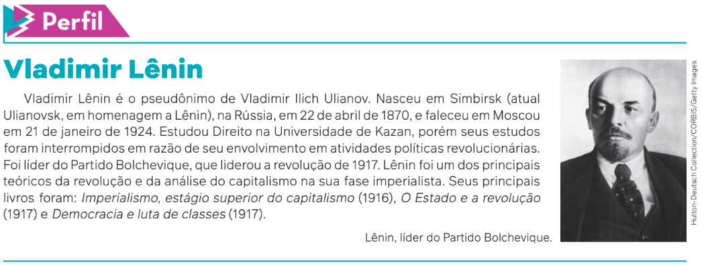

Fome no mundo compromete objetivos da ONU para 2030
[...]Conhecida pela sigla FAO, correspondente à sua denominação em inglês, a Organização das Nações Unidas para a Alimentação e a Agricultura divulgou[...] a edição mais recente [de 2023] do relatório sobre o Estado da Segurança Alimentar e Nutrição no Mundo. Elaborado pela FAO em conjunto com outros organismos do sistema da Organização das Nações Unidas, a ONU, entre eles a Organização Mundial da Saúde, o relatório é alarmante.
Ele indica, com toda clareza, que alguns dos Objetivos de Desenvolvimento Sustentável – os ODS, fixados pela ONU para 2030 – não serão mais alcançados. São os objetivos listados no ODS número 2, que determinam para a comunidade internacional a obrigação de acabar com a fome e com todas as formas de desnutrição até 2030.[...]
[...]Atualmente, mais de 700 milhões de pessoas passam fome em todo o mundo, o que equivale a quase 10% da população do planeta. E esse número, que deveria estar caindo por conta da meta de “fome zero” fixada para 2030, aumentou significativamente nos últimos anos. São 120 milhões a mais, em comparação com 2019, antes da pandemia de covid-19. Já o quadro mais geral de insegurança alimentar atinge quase 2,5 bilhões de pessoas, praticamente um terço dos habitantes da Terra.
[...]a FAO alertou para o fato de que, desde a edição de 2017, o relatório vem repetidamente chamando a atenção para fatores que estão inviabilizando os objetivos do ODS número 2, de eliminação da fome e da desnutrição. De um lado, a intensificação e a inter-relação de conflitos armados, situações climáticas extremas e crises econômicas. De outro lado, a crescente desigualdade social, com a consequente falta de maior acesso a alimentos nutritivos.
As informações relacionadas ao Brasil são igualmente preocupantes. De um total de cerca de 210 milhões de habitantes, a situação de fome absoluta atinge 10 milhões em nosso país, segundo o relatório; e a insegurança alimentar, um total de 70 milhões. Apesar de um quadro de relativa estabilidade entre os dados de 2021 e 2022, no Brasil e no mundo, é um número extremamente elevado de pessoas em condições alimentares muito precárias.
DALLARI, P. Fome no mundo compromete objetivos da ONU para 2030. Jornal da USP, São Paulo, 26 jul. 2023. Disponível em:
https://jornal.usp.br/radio-usp/fome-no-mundo-compromete-objetivos-da-onu-para-2030/. Acesso em: 10 jul. 2024.

Você pode se perguntar: se este capítulo tratará do tema capitalismo,
por que ele se inicia por um texto sobre a fome no mundo? Como você
perceberá ao longo do percurso, a temática da fome se relaciona de
forma profunda com a maneira como as sociedades estão organizadas,
evidenciando-se especialmente nas sociedades capitalistas. Assim,
vamos destacar, neste capítulo, alguns aspectos e características do
capitalismo, uma forma de organização social, política e econômica
que, neste século XXI, apesar das suas diferenças regionais e locais,
domina praticamente todo o nosso planeta.
Voluntários de organização que atua no combate à fome servem refeições para
população em vulnerabilidade social. Houston, Estados Unidos, 2024.

Origens do capitalismo
A humanidade, ao longo da história, estabeleceu formas diferentes de produzir os bens necessários à sua sobrevivência. Uma dessas formas de organização, vigente na grande maioria das sociedades atuais, inclusive no Brasil, é chamada de **capitalismo**.
Como se viajássemos em uma máquina do tempo, vamos estacioná-la na Europa, durante a Idade Média, entre os séculos IV e XIV (do ano 301 até, aproximadamente, o ano 1400). A forma de organização da sociedade, então, era conhecida como **feudalismo**.
Uma das características da sociedade feudal era uma estrutura social fixada, sem chances de mudança, de acordo com o mundo regido pela Igreja Católica. Se uma pessoa nascesse em uma família pertencente à nobreza teria o que popularmente se chama de “sangue azul”, sendo herdeira das terras em torno do castelo e escolhida por Deus como destinatária de toda a riqueza produzida, dos impostos e das taxas pagos pelos que necessitassem atravessar as terras do feudo. Mas, se nascesse servo, seria um plebeu, nada mais lhe restando do que trabalhar, resignadamente, para seu senhor durante toda a vida, tornando-se um merecedor do reino de Deus quando viesse a falecer. Esse mundo, organizado assim, não podia ser questionado nem consequentemente ser mais transformado.
Grandes mudanças, porém, começaram a ocorrer em toda a Europa, principalmente a partir do século XIV, para além da vontade daqueles que detinham o poder e a riqueza. Foram mudanças que ocorreram lentamente, de forma gradativa, praticamente imperceptíveis para quem vivia à época.

Entre as diversas transformações, podemos destacar o aumento do número de membros dos grupos sociais: comerciantes, artesãos e camponeses livres. Estes últimos surgiram a partir da cessão de terras consideradas inférteis ou improdutivas, principalmente em regiões pantanosas, a grupos de servos, mediante pagamento de taxas e estabelecimento de outros compromissos de obediência. Deve-se registrar que, na Europa do século XII, segundo o economista estadunidense Leo Huberman (1903-1968), eram cultiváveis apenas a metade das terras francesas, um terço da atual Alemanha e um quinto da Inglaterra.
Ilustração presente
na obra As horas
muito ricas do
Duque de Berry,
dos irmãos
Limbourg, autoria
desconhecida,
c. 1440.
Já o grupo social composto dos comerciantes havia surgido nos entroncamentos
das diversas rotas comerciais existentes na Europa, que formavam grandes
feiras, onde eram negociados os valiosos produtos originários do Oriente,
com destaque para as chamadas especiarias.
Essas feiras acabaram se transformando em verdadeiras cidades fortificadas,
inicialmente chamadas de burgos – daí o nome burgueses, pelo qual aqueles comerciantes passaram a ser conhecidos.
Como destacamos anteriormente, a forma de organização social existente na Europa era o feudalismo. Os novos grupos sociais não se ajustavam ao antigo sistema social, político e econômico. Os camponeses livres, apesar de minoritários, haviam se colocado à margem da servidão feudal, e os artesãos, por sua vez, trabalhavam por conta própria nas cidades, aproveitando-se também do renascimento comercial.
Quanto aos burgueses, deve-se destacar que seu rápido enriquecimento acabou por gerar mudanças profundas naquela velha ordem, em que não havia lugar e reconhecimento para essa nova classe social. As mudanças abrangiam desde contestações à filosofia da Igreja Católica, que considerava pecado a obtenção de lucros, os juros e a usura – aspectos de um conjunto de mudanças que resultou na **Reforma Protestante** –, como também contestações ao poder acumulado pela nobreza feudal.
Nesse caso, a burguesia ascendente tratou de reforçar e centralizar o poder na pessoa do
rei, em uma aliança que fez nascer as chamadas monarquias nacionais e que possibilitou as
Grandes Navegações, capitaneadas por Portugal e Espanha. Assim, no meio da ordem feudal,
estava sendo gestado, aos poucos, um novo sistema social e econômico, o capitalismo. Com o
tempo, desmoronava-se a velha sociedade estamental, como viria depois a ocorrer definitiva-
mente com as revoluções inglesas do século XVII e a Revolução Francesa de 1789.
Acumulando capital e revolucionando a indústria
O capitalismo se tornou a organização social, política e econômica dominante
a partir da Revolução Industrial, iniciada na Inglaterra no século XVIII.
Entretanto, para vigorar dessa forma, era necessária uma fase anterior de
“acumulação de capital”. Vamos entender isso melhor.
Atualmente, para alguém iniciar um negócio, uma empresa, é necessário obter
capital; isso também ocorria com os burgueses da época. Karl Marx
(1818-1883), um dos principais estudiosos do capitalismo, analisou o que
ocorreu na Inglaterra em seu período pré-capitalista.
Ele demonstrou que houve uma transformação radical das relações de produção
até então existentes no campo.
A transição do sistema feudal para o capitalista ocorreu por meio da apropriação da
terra pela burguesia, com a expulsão dos camponeses que lá viviam. Marx denominou esse
processo acumulação primitiva de capital.
Foi exatamente isso o que ocorreu: os camponeses foram expropriados, separados das
terras que cultivavam, restando-lhes apenas a venda da sua força de trabalho em troca de um
salário. Foram esses trabalhadores que serviram de mão de obra para as indústrias que
surgiam e que passaram a ser empregados como assalariados nas terras que antes cultivavam no
sistema de trocas servil.
Você talvez pergunte se em toda a Europa o capitalismo surgiu da mesma forma. A
Inglaterra foi o caso analisado por Karl Marx. Mas, e depois, como aconteceu a expansão do
capitalismo? Podemos responder que, de fato, as mudanças ocorreram de formas
diferenciadas, em tempos distintos, de acordo com uma série de variáveis. Muitos cientistas sociais
e historiadores que pesquisam o tema, por exemplo, chamam atenção para o papel decisivo
desempenhado nas cidades europeias pelo comércio, pelas trocas de mercadorias. De
qualquer forma – considerando como elemento principal do processo de acumulação primitiva
de capital –, por meio da análise de Marx a respeito da expropriação da terra, podemos dizer
que o capital prosseguiu em seu processo de acumulação com a multiplicação dos centros
comerciais existentes nas cidades (os burgos). Além disso, de forma extremamente relevante
e mais decisiva, prosseguiu com a expansão do chamado capital mercantil, com a apropriação
da riqueza existente em terras de outras partes do mundo, durante o período das Grandes
Navegações e com o avanço da colonização.
Assim, o processo de acumulação de capital foi se desenvolvendo por meio do
financiamento de corsários e piratas, do tráfico de escravizados (principalmente africanos), do
empréstimo de dinheiro a juros por intermédio da organização de instituições bancárias, do
pagamento de salários miseráveis aos artesãos empregados nas manufaturas e, não menos
importante, vencendo guerras, comerciando e impondo tratados a outros países.
Depois da indústria, o comércio passou a ser a atividade mais importante da burguesia
inglesa – como forma de transportar e comercializar seus produtos industriais. Os comerciantes
ingleses e seus navios estavam por toda a parte do mundo. Quanto maior a atividade
comercial, maior era a concorrência. Cada mercador inglês queria abater seus concorrentes e, para
vencer, era preciso oferecer produtos mais baratos. Apresentou-se, então, um questionamento
entre os mercadores: como baixar cada vez mais os custos da produção?
A resposta estava no uso de máquinas. Desse modo, foi a pressão do mercado que levou a
burguesia inglesa a aprimorar suas máquinas e a instalar mais indústrias.
Mas o capital depende do trabalho; ou seja, a burguesia necessitava de operários para
instalar suas indústrias e fazê-las operar. Para encontrá-los, era necessário ir ao campo, onde
estava a mão de obra.

No século XIX, a Revolução Industrial alcançou
outros países europeus, como França, Alemanha,
Itália (na parte norte) e Rússia. Nos Estados Unidos,
as primeiras indústrias foram instaladas no
final do século XVIII, mas seu desenvolvimento se
deu na segunda metade do século XIX.
A Revolução Industrial trouxe seu
símbolo máximo: a máquina a vapor. Era o sinal dos
novos tempos: barcos, trens, ferros de passar
roupa e banhos a vapor. Começou, então, a produção
em massa, e o desejo do lucro tornou-se
um ideal a ser seguido. As pequenas oficinas
tornaram-se grandes fábricas, apareceram as
chaminés, construíram-se pontes, túneis, minas.
Máquina a vapor, de James Watt,
patenteada em 1781, c. 1899.
O desenvolvimento industrial arruinou os artesãos, já que os sapatos e os tecidos eram confeccionados mais rapidamente e de maneira mais barata em uma fábrica do que nas oficinas dos artesãos, sapateiros ou tecelões. Bem como os camponeses destituídos de suas terras, os artesãos também tiveram de buscar emprego de operários nas fábricas. Havia, então, uma multidão que não conseguia mais viver por conta própria, destinada a trabalhar para um patrão em troca de um salário. Formou-se, assim, uma nova classe social chamada proletariado.
Trabalhadores
em fábrica
inglesa. Bradford,
Inglaterra, final do
século XIX.
Desse modo, o capitalismo trouxe grandes transformações para a humanidade. Como Karl
Marx e Friedrich Engels (1820-1895) diziam, em 1848: “tudo que era sólido se desmanchava no
ar”. As grandes potências mundiais da época eram todas capitalistas. Fábricas, terras, matérias-
primas, comércio, bancos, máquinas, tudo pertencia aos capitalistas, que manipulavam o capital
com um único objetivo: obter lucro e ganhar dinheiro.
Novos ideais políticos e econômicos: o liberalismo
O que caracteriza socialmente e economicamente a sociedade capitalista são as relações
assalariadas de produção (trabalho assalariado). Tais relações se baseiam na propriedade privada das
fábricas, terras, bancos, minas de carvão e grandes transportadoras comerciais.
São essas relações que constituem os meios pelos quais a riqueza da sociedade é
produzida; por esse motivo, são chamados de meios de produção. Recebem também a
denominação de capital, termo que, no senso comum, é associado à posse de recursos monetários, ao
dinheiro. Na verdade, todos os meios de produção de riqueza, ou de valor monetário, como
fábricas e minas de carvão, são capitais, pelo valor que esses bens têm investidos e são
capazes de produzir.
O trabalhador não é obrigado a ficar sempre na mesma terra ou fábrica; ele é livre para se
empregar na propriedade do capitalista que o aceitar. Como não é dono dos meios de
produção, é obrigado a trabalhar para os proprietários do capital.
Segundo Marx, há duas classes principais: a burguesia e os trabalhadores assalariados (ou
proletariado). Se o capitalismo é movido pelo lucro, para aumentar seus lucros os capitalistas
procuram aumentar a produção por meio do aperfeiçoamento técnico, da exigência de maior
produtividade dos operários, de maior racionalização do processo de produção.
Deve-se registrar que a ascensão do poder político e econômico da burguesia, descrita
anteriormente, foi acompanhada pela formulação de um conjunto de ideias que justificaram essa
nova sociedade que estava surgindo nesse processo tão intenso de mudanças.
Na política, o grande marco desse processo de mudanças foi a Revolução Francesa, em
1789, em que foi aprovada a Declaração dos Direitos do Homem e do Cidadão, que afirmava
que “todos eram iguais perante a lei”. A Revolução Francesa consagrou o lema igualdade,
liberdade e fraternidade.

As ideias que culminaram com a Revolução Francesa foram gestadas pela burguesia
europeia ascendente, durante os séculos XVII
e XVIII, como reivindicação fundamental pela
expressão das liberdades políticas e econômicas dos indivíduos contra as arbitrariedades
do Estado absolutista vigente então no continente,
tanto em relação aos entraves determinados pelo poder absoluto dos monarcas
como pelo seu controle total da economia,
em um modelo nomeado como mercantilismo.
John Trumbull.
Declaração de
Independência [...],
1787. Óleo sobre tela,
53 cm x 78,7 cm.
Essa corrente de pensamento de origem
burguesa recebeu o nome genérico de liberalismo,
tendo servido de suporte às revoluções
capitalistas que ocorreram desde então,
assim como à luta pela independência dos Estados
Unidos, representada na imagem.
No caso do liberalismo político, o combate contra o poder da monarquia e da Igreja
reuniu pensadores considerados “clássicos”, como é o caso, por exemplo, do inglês John Locke
(1632-1704) e do francês Charles de Montesquieu (1689-1775).
Locke defendia que a organização política deveria ter a preocupação de preservar a
liberdade individual dentro do quadro dos direitos naturais: vida, liberdade, propriedade – e suas
consequências, como liberdade de pensamento, religiosa e de revolta –, tendo como limite
sempre alguma ameaça à liberdade de outro indivíduo. Montesquieu, por sua vez,
preocupou-se em propor uma teoria de divisão dos poderes que teria como objetivo a busca do equilíbrio
na sociedade, evitando-se quaisquer tipos de arbitrariedades (retomaremos essa temática em
outro capítulo, quando estudarmos as teorias sobre o Estado Moderno).
Apesar de definirmos essa corrente teórica como liberalismo político, esses pensadores
não dissociavam essas questões da organização econômica, principalmente do direito à
propriedade, apresentado por Locke como um direito natural dos seres humanos.
E de que modo se daria a relação entre a política e a economia, segundo esses pontos
de vista? Como contraposição ao mercantilismo como uma política de intervenção direta
do Estado na atividade econômica, outros defensores desses princípios, como Adam
Smith (1723-1790) e David Ricardo (1772-1823), diziam que as principais funções do governo
deveriam ser limitadas a somente três: proteger a propriedade, não interferir no lucro e
preservar a paz. Por essa razão, o conjunto de teorias formuladas por esses economistas
ficaram conhecidas como liberalismo econômico.

Concorrência e monopólio
Desde a Revolução Industrial, como vimos, os capitalistas continuavam procurando expandir
seus negócios e ampliar os lucros. Com as revoluções que ocorreram em vários países da
Europa e nos Estados Unidos, o sistema capitalista prosperava cada vez mais.
Em meados do século XIX, as indústrias iniciaram uma fase de grande concorrência e, para
disputar os mercados, começaram a diminuir os preços. Essa concorrência se transformou em
uma “prova de resistência” para diversos capitalistas.
Para abaixar os preços, era necessário aumentar a produção e colocá-la no mercado. Com
isso, procurou-se ampliar o mercado. E, para não falir, os pequenos capitalistas precisavam
continuar produzindo como os grandes; mas, para produzir, precisavam de dinheiro. Como o
dinheiro estava nos bancos, que se aliavam aos grandes capitalistas, muitos pequenos
empresários acabaram falindo.
Na lógica capitalista, portanto, sobreviviam somente os “mais fortes”. As companhias de
ferro, carvão, entre outras, ligadas aos bancos, estabeleciam o monopólio; ou seja, definiam o
grupo de empresas que dominaria o mercado, controlando a quantidade de bens à disposição
dos consumidores e, sem concorrência, estabelecendo os preços. Instalado a partir do final do
século XIX, o capitalismo monopolista resiste até hoje, sendo chamado também de capitalismo financeiro.
A crise: superprodução de mercadorias e imperialismo
A situação das economias capitalistas se tornou dramática no século XIX, pois o mercado
ficou “inundado” de mercadorias. Esse processo foi nomeado pelos economistas como uma
“crise de superprodução”, ou seja, muitas mercadorias e poucos consumidores, resultando em
uma crise econômica.
Para Karl Marx, o capitalismo era irracional. Ele tentou provar que a concorrência entre
empresas acabaria mergulhando a economia capitalista em um terrível caos, que incluiria, de
tempos em tempos, grandes crises econômicas, com falências, desemprego, aumento da
miséria e da violência. O capitalismo se tornaria cada vez mais ineficiente, desperdiçando
recursos, causando miséria e insegurança; pois se, por um lado, com a crise de superprodução, as
indústrias demitiam operários para baixar custos e prejuízos, por outro, piorava mais a situação
dos operários, que, na prática, eram os consumidores das mercadorias.
No final do século XIX, representantes do capital, preocupados com a falta de mercado
nos seus próprios países, partiram para novos espaços geográficos a fim de tentar resolver
a crise. Encontraram como uma das soluções a **colonização
da África e da Ásia**. As empresas capitalistas e as nações europeias
fizeram a partilha do continente africano em colônias
para expandir seus mercados e obter mão de obra e matéria-prima
baratas. Dessa época até hoje, a história de muitos
países latino-americanos, africanos e asiáticos é a de submissão
aos interesses do capitalismo monopolista da Europa e
dos Estados Unidos. Essa situação de submissão política
e econômica, provocada pelos interesses capitalistas, passou
a ser conhecida desde então como imperialismo.
A ilustração faz referência à partilha da África durante o neocolonialismo do século XIX, deliberada durante a Conferência de Berlim, ocorrida entre novembro de 1884 e fevereiro de 1885. O evento delimitou regras e acordos durante a ocupação do continente africano pelas empresas capitalistas e as nações europeias, para que os conflitos não impedissem o fluxo do comércio.
Segundo o político socialista e teórico russo Vladimir Lênin (1870-1924), o **imperialismo**
é o capitalismo na sua maturidade. O capitalismo monopolista estende ao resto do
mundo seu domínio econômico e, por consequência, militar.
Para exemplificar o alcance desse poder, veja o que dizia o general Smedley Butler
(1881-1940), que passou 33 anos e quatro meses no Corpo de Fuzileiros Navais como
agente de segurança do capital estadunidense, no período entre o final do século XIX e
as primeiras décadas do século XX.
Desde segundo-tenente até general, passei a maior parte do tempo servindo de
guarda-costas para Wall Street e seus banqueiros.
Assim, ajudei a transformar o México num lugar seguro para os interesses
petrolíferos americanos em 1914.
Ajudei a fazer de Cuba e Haiti lugares decentes para que os rapazes do City Bank
pudessem recolher seus lucros em paz.
Ajudei a purificar a Nicarágua para que os irmãos Brown pudessem instalar seus
bancos, entre 1909 e 1912. Limpei o terreno na República Dominicana para os interesses
açucareiros norte-americanos, em 1916.
Na China, em 1917, colaborei para que a Standard Oil fizesse seu trabalho. Eu tinha,
como diriam os rapazes do gatilho, uma boa quadrilha.
Fui recompensado com honrarias e promoções. Voltando, agora, os olhos ao passado,
acho que poderia dar umas boas sugestões a Al Capone.
BUTLER, S. In: NOVAES, C. E.; RODRIGUES, V. Capitalismo para principiantes. São Paulo: Ática, 2008. p. 108.
Max Weber e o “espírito” do capitalismo
As reflexões que apresentamos até o momento podem
dar a entender que a teoria formulada por Karl Marx é a
única que tem força explicativa sobre o surgimento do
capitalismo e suas principais características. Mas existem
outras correntes teóricas que tiveram essa mesma
finalidade, elaboradas por economistas, historiadores e
filósofos. No entanto, na Sociologia, o também alemão Max
Weber (1864-1920) apresentou uma construção teórica
considerada por muitos pensadores, até os dias de hoje,
como instigante e inovadora, relacionando o surgimento
do capitalismo à Reforma Protestante.
Max Weber, na passagem do século XIX para o século
XX, desenvolveu uma série de estudos intitulados Sociologia da Religião.
Entre esses estudos, foi publicada em
duas partes, em 1904 e 1905, a primeira versão da sua
obra A ética protestante e o “espírito” do capitalismo.
A preocupação central de Weber era examinar os principais
aspectos sociais e econômicos presentes historicamente nas sociedades ocidentais,
o único lugar do mundo
onde, até então, havia florescido e se consolidado a organização
social e econômica capitalista. Um desses aspectos
era tentar entender a relação muito próxima entre
as ideias predominantes em determinado segmento do
protestantismo cristão, o calvinismo, e a influência
qualitativa que elas exerceram para constituir o que ele
denominou “espírito” do capitalismo, então nascente.
O argumento central de Weber tomava como base o
princípio básico da ascese – termo que pode ser entendido
também como abnegação – presente nas práticas
religiosas calvinistas.
O ascetismo reúne um conjunto de práticas religiosas prescritas aos indivíduos com
base em um comportamento disciplinado, rígido e simples, caracterizado também como
puritano, em cumprimento a uma ética moral necessária à realização dos desígnios divinos.
Uma das ideias centrais do calvinismo é o entendimento de que o trabalho é a própria finalidade da vida.
Como explica Weber:
[...] a valorização religiosa do trabalho profissional mundano, sem descanso, continuado,
sistemático, como o meio ascético simplesmente supremo e a um só tempo comprovação
o mais segura e visível da regeneração de um ser humano e da autenticidade de
sua fé, tinha que ser, no fim das contas, a alavanca mais poderosa que se pode imaginar da
expansão dessa concepção de vida que aqui temos chamado de “espírito” do capitalismo.
WEBER, M. A ética protestante e o “espírito” do capitalismo. São Paulo: Companhia das Letras, 2004. p. 156-157.
Na análise de Max Weber, essas visões de mundo cumpriram com o papel de “libertar” ética
e psicologicamente os protestantes para a aquisição de bens e a busca de lucros,
considerando o sucesso eventualmente alcançado nesse sentido como fruto da vontade de Deus.
Assim, a vitória alcançada pela dedicação constante e sistemática ao trabalho – entendido
como vocação – se configurava como um exemplo de afirmação da sua fé religiosa e um caminho
para a salvação. Tal concepção valia tanto para os trabalhadores, em geral, que deveriam
se resignar e cumprir com dignidade as tarefas exigidas pela profissão que exercessem, por
mais miserável que fosse seu salário, quanto para os empresários. Nesse último caso, a
demonstração de fé era devidamente recompensada sob o ponto de vista da aquisição material
e da consequente acumulação de riqueza, entendida como parte da bênção divina alcançada
por aqueles que estariam predestinados, os “eleitos” a alcançar o paraíso na Terra.
O sociólogo brasileiro Maurício Tragtenberg (1929-1998) nos alerta que, de forma alguma,
Max Weber entendia o tal “espírito” do capitalismo como consequência da Reforma
Protestante. O que ele pretendia, de fato, era investigar de que maneira a sociedade capitalista havia
sido influenciada qualitativamente pela religião. É importante registrar também que
metodologicamente ele nunca se dispôs a construir uma explicação “total” sobre a origem dessa
organização social e econômica. Sua tese, porém, é sempre confrontada com o pensamento de Marx,
pois, diferentemente desse outro pensador, em sua abordagem mais centrada na economia,
aponta para aspectos de ordem cultural que estariam presentes na constituição do capitalismo
como fenômeno social.
Enfim, em sua formulação teórica, o capitalismo surge e prossegue com base no
desenvolvimento de fatores culturais, e não econômicos. Segundo Weber, na origem da nova
sociedade que então surgia, a ciência, a tecnologia moderna e a burocracia – com o seu papel de
organizar a administração de um grande número de pessoas – tiveram um impacto ainda mais
fundamental do que a economia capitalista. Esses outros aspectos – ciência, tecnologia e
burocracia – têm em comum, para Weber, a característica que ele nomeava como racionalização,
ou seja, a organização da sociedade e da economia com base na eficiência e no conhecimento
técnico, princípios decisivos desse processo.
Existiria alguma alternativa ao capitalismo?
Desde o século XIX, quase todos os dias vemos nos jornais, nas revistas, nas conversas e,
mais recentemente, nas redes sociais alguma frase ou ideia sobre socialismo e comunismo.
Mas o que é realmente o socialismo? Qual é a diferença entre socialismo e comunismo?
Vimos, anteriormente, que a situação dos trabalhadores no início do desenvolvimento
capitalista na Europa era degradante. Nesse contexto, surgiram contestações à ordem
vigente, críticas ao sistema capitalista e propostas de uma nova organização da sociedade.
Não existiam somente as ideias dominantes do liberalismo e do capitalismo.
Na década de 1830, surgiram pensadores ingleses e franceses que eram chamados de
socialistas. Eles acreditavam que a economia não deveria beneficiar poucos indivíduos (a
burguesia), mas toda a sociedade. Em vez da competição do mercado, propunham a
cooperação. Os socialistas pensavam que as mudanças poderiam ser planejadas e que se
deveria arquitetar uma nova sociedade, mais justa, mais harmônica, mais racional. Os
primeiros a se destacarem nesse debate foram Robert Owen (1771-1858) e Charles Fourier
(1772-1837).
Monumento em homenagem a Marx e Engels. Berlim, Alemanha, 2023.
Os socialistas que mais influenciaram as
gerações de futuros críticos do capitalismo,
porém, foram os pensadores alemães Karl Marx
e Friedrich Engels, fundadores do socialismo
científico, hoje chamado de marxismo. Suas
ideias partiam das seguintes perguntas: por
que existem os problemas sociais? De que
modo é possível superá-los? Ao contrário de
outros pensadores da época, eles acreditavam
que os filósofos se limitaram a interpretar o
mundo de diferentes maneiras; mas o que
importa é transformá-lo.
Marx e Engels achavam que somente o estudo
científico da sociedade poderia responder
a essas questões. Para eles, havia uma única
força social capaz de transformar o mundo: o
proletariado.
Para os fundadores do socialismo científico, o proletariado, por conta própria, tinha força
para construir uma nova sociedade. Em 1848, declararam que a emancipação da classe
trabalhadora é obra da própria classe trabalhadora. Na sua obra mais famosa, O capital, de
1867, Marx demonstrou com dados econômicos que o capitalismo era um sistema injusto e
irracional. Injusto porque só haveria um meio de a burguesia lucrar: explorando a força de trabalho
do proletariado.
Mais-valia e luta de classes
Como se pode perceber, na análise de Marx e Engels, a burguesia e o proletariado, que são
as classes sociais fundamentais do capitalismo, seriam totalmente antagônicos. Isso significa
dizer que a burguesia, que é numericamente uma minoria, somente pode existir em razão da
existência e da submissão da maioria, o proletariado.
No capitalismo, os meios de produção de riqueza estão nas mãos da burguesia. Logo, para
não morrerem de fome, os trabalhadores precisam se submeter a ela. Recebem um salário e,
em troca, sua capacidade de trabalhar fica à disposição de um patrão, que procura explorá-la
ao máximo. Desse modo, o valor do trabalho realizado pelo operário acaba sendo maior do que
o salário que recebe. Mas tudo o que o proletariado produz além do valor do seu salário fica
com o patrão. Essa é a origem de seu lucro. Marx chama essa diferença de mais-valia.
Para Marx, a mais-valia ocorria porque o capitalismo estava baseado na propriedade
privada dos meios de produção.
Para solucionar esse problema,
ele afirmava que o capitalismo
precisava ser destruído a fim de
que os trabalhadores se tornassem
donos de todos os meios de
produção; ou seja, o proletariado
deveria expropriar a burguesia e
fundar uma sociedade socialista.
Nessa nova sociedade, terras,
bancos, minas e fábricas
pertenceriam a todos aqueles que
produzissem e trabalhassem.

Tudo
seria de todos, e os frutos do
trabalho coletivo seriam distribuídos
de acordo com a produção de
cada um. Dessa forma, ninguém
exploraria ninguém.
Marx e Engels concluem, portanto,
que “a história de todas as
sociedades até hoje existentes é a
história das lutas de classes”. Essa
se tornou uma das frases clássicas
do Manifesto Comunista, redigido
pelos dois em 1848. O antagonismo
entre as classes sociais
encontra a sua maior radicalidade
exatamente no capitalismo –
sistema em que o proletariado não
teria nada a perder, como afirmam
os autores no Manifesto.
Com base nas análises dos
teóricos do socialismo científico,
a partir da segunda metade do
século XIX, surgiram vários
movimentos de trabalhadores que
lutaram contra o sistema capitalista
e promoveram uma série de
revoltas, insurreições e revoluções.
WILL TIRANDO. Mais Valia. In: WILLTIRANDO. [S. l.],
2013. Disponível em: http://www.willtirando.com.br/
mais-valia/. Acesso em: 10 set. 2024.
Revoluções socialistas
No Manifesto Comunista, Marx e Engels afirmavam também que o proletariado precisava
construir seu partido para tomar o poder político e derrubar o capitalismo e a burguesia.
Não podemos, aqui, confundir comunismo e socialismo.
Para Marx, socialismo seria a primeira etapa de construção de uma nova sociedade, em que os operários, depois de derrubarem a burguesia, instalariam um novo Estado, chamao de Estado Operário.
Com o desenvolvimento desse Estado, baseado na ampliação da participação dos
produtores de riqueza nas decisões econômicas e políticas da sociedade, aos poucos,
os indivíduos perceberiam que o Estado não seria mais necessário, evoluindo para o
comunismo, com uma sociedade em que todos deveriam desfrutar das riquezas
produzidas, extinguindo definitivamente as desigualdades e a exploração entre as
pessoas.
Mas é somente em 1917, com a Revolução Russa, que as ideias socialistas tomam
corpo. A Rússia, nos primeiros anos do século XX, era governada pelos czares (os
imperadores), sendo um dos países mais pobres e opressores do mundo. Em
novembro de 1917, operários e camponeses, guiados por Lênin e outros líderes do
Partido Bolchevique, como Liev Trotski (1879-1940) e Josef Stalin (1878-1953), fizeram
uma revolução. Foi a primeira tentativa na história de construir uma sociedade
socialista.
Lênin, o grande líder da Revolução Russa, em 1917, em um de seus mais famosos
livros – O Estado e a revolução –, escreveu que o socialismo só poderia ser
realmente válido com um regime democrático, em que o poder fosse exercido pelos
próprios trabalhadores. Afirmava que o Estado, após a revolução vitoriosa, se
extinguiria paulatinamente, conforme defendia Marx.
A partir de 1922, a revolução socialista iniciada na Rússia se dissemina para as
repúblicas vizinhas, constituindo a União das Repúblicas Socialistas Soviéticas (URSS).

Após a morte de Lênin, em 1924, houve uma disputa de poder entre os dois mais importantes
dirigentes russos, Trotski e Stalin. Trotski defendia a expansão da revolução a outros países,
pois achava que a restrição do socialismo a um único país, com o consequente isolamento da
URSS, levaria, de forma inevitável, ao fracasso do movimento. Essa teoria foi intitulada por ele
como “revolução permanente”. Já Stalin defendia a tese de que a URSS era um país enorme,
cheio de recursos naturais, com uma população grande, e que por isso seria possível construir
o socialismo somente na URSS, para depois expandi-lo a outros países. Essa ideia foi chamada
de “socialismo num só país”.
O fato é que Stalin estava acumulando muitos poderes, e as ideias de Trotski foram
derrotadas. Pouco tempo depois, ele foi obrigado a abandonar o país, em 1927. Stalin, então,
tornou-se o dirigente da URSS e, durante seu governo, milhares de comunistas foram presos e
fuzilados. Ele teve pleno poder até o dia de sua morte, em 1953, exercendo-o como ditador.
Como vimos, de acordo com as teorias de Marx, Engels e Lênin, na sociedade socialista o
Estado se dissolveria aos poucos. Os trabalhadores administrariam as empresas e a economia.
Democraticamente, a própria sociedade se autogovernaria. Lênin acreditava que os sovietes
(comitês de operários, soldados e camponeses) teriam cada vez mais poder para decidir no
lugar do Estado; porém nada disso aconteceu na antiga URSS.
No tempo de Stalin, o Estado passou a dominar
tudo, e os sovietes perderam o poder. O governo se
autoproclamava a “ditadura do proletariado”,
inspirado nos ideais marxistas. Mas como o proletariado
tinha cada vez menos espaço de intervenção, os críticos
russos desse regime o denominaram de “ditadura
da burocracia”.

A grande crítica de Trotski ao regime soviético era que esse
revolucionário russo afirmava que os princípios escritos
por Marx, Engels e Lênin jamais foram praticados,
pois a realidade do país era completamente diferente
das ideias originais deles. Para Trotski, o que existia na
URSS era uma ditadura da burocracia do Partido
Comunista. As conquistas econômicas da revolução se
mantinham, o que fez a URSS se tornar uma grande
potência mundial, porém a “democracia operária” fora
destruída pelos burocratas do Partido Comunista.
Outras revoluções seguiram rumos parecidos com os da revolução soviética, ao longo do
século XX: a da China, a do Leste Europeu, a do Vietnã e a de Cuba. Nessa última, podemos
encontrar até mais elementos de democracia. Entretanto, existe um partido único, uma
imprensa única, e não há eleições diretas para o poder central, apesar da grande
popularidade dos líderes revolucionários – Fidel Castro (1926-2016) e Che Guevara (1928-1967),
principalmente – até hoje, mesmo após a morte deles.
De forma contraditória, em nome do socialismo, das ideias de Marx e do comunismo, o
regime soviético reprimiu opositores, assassinou líderes comunistas e desvirtuou a história da
Revolução Russa. Autoritarismos diversos foram realizados contra o povo soviético: falta de
liberdade, partido único, censura, repressão, Estado acima das pessoas. A burguesia dos
países capitalistas se aproveitou disso e denominou de “socialismo real” e “ditadura
comunista” tudo aquilo que ocorria na URSS.
Em resumo, podemos afirmar que o ideal socialista, de acordo com as ideias originais
de Marx, nunca existiu.
Como aprofundaremos adiante, no final da década
de 1980 e começo da década de 1990, começaram
a ocorrer profundas mudanças políticas e econômicas
na URSS e em países do Leste Europeu: caíram os
governos do Partido Comunista e foram feitas reformas
para tornar mais democrático o sistema político,
com eleição direta para os principais cargos. A economia
também passou por profundas alterações, com
a diminuição do controle do Estado, a reativação dos
mecanismos de mercado e com o restabelecimento
da propriedade privada e do capitalismo.
Nesse contexto, surge a ideia, propagandeada
pela burguesia dos países capitalistas, de que o fim
dos regimes políticos da URSS e do Leste Europeu
significaram a falência das ideias marxistas, socialistas
e comunistas como alternativa ao capitalismo, e
que o capitalismo seria o regime econômico definitivo
no futuro da humanidade.
A crise econômica da década de 1970
No início dos anos 1970, o capitalismo viveu mais uma crise, que já apresentara seus
primeiros sinais na década anterior. A recuperação econômica da Europa Ocidental e do Japão,
destruídos pela Segunda Guerra Mundial, havia se completado, o mercado interno estava
saturado e o impulso para criar mercados de exportação para seus excedentes tinha de
começar. Entretanto, a queda da produção e das taxas de lucro influenciou o início de um
problema fiscal nos Estados Unidos que só seria resolvido com a aceleração da inflação.
Cabe aqui uma breve explicação: quando se fala em problema fiscal na economia – uma
linguagem comum nas mídias sociais que tratam do tema –, estamos nos referindo aos gastos
públicos: despesas que o Estado precisa assumir para apresentar políticas em benefício da
população. Para efetuar esses gastos, os governos arrecadam dinheiro, por meio de diversos
impostos e taxas, recolhidos da população e das empresas. O “problema fiscal” surge quando
as despesas começam a crescer, sem acompanhamento equivalente da arrecadação.
O aumento nas taxas de inflação, na maioria dos países europeus, se originou dos
compromissos assumidos pelo chamado Estado de Bem-Estar Social (Welfare State), modelo
adotado por muitos desses países e caracterizado pelo papel do Estado na organização da
economia e na promoção de serviços básicos aos cidadãos. Com isso, buscava-se tanto
conceder aos trabalhadores melhores condições de vida quanto implementar as políticas de
infraestrutura de expansão ao capitalismo.
Diminuindo a produção, o Estado arrecada menos. Arrecadando menos, faz-se necessário
imprimir moedas para manter os compromissos do Estado (programas de assistência,
seguridade social, direitos de pensões, entre outros), gerando a estagflação, que se
configura como estagnação econômica com inflação, isto é, com rápida elevação dos preços.
Aviso em posto de
combustível sobre
a falta de gasolina.
Estados Unidos,
1979.
A globalização e a sua sustentação teórica, o neoliberalismo, representaram a saída política dos capitalistas à crise instalada a partir dos anos 1970, com a implementação da produção e da acumulação flexível de capital, caracterizada por novos modelos de produção, comercialização e consumo, adaptados às transformações econômicas e tecnológicas (retomaremos esse tema no próximo capítulo). Implementados globalmente a partir das últimas décadas do século XX, esses novos modelos modificaram profundamente as relações de trabalho, dos empresários e do Estado com os trabalhadores, gerando novas formas de relações sociais, como veremos adiante.
O que é um mundo globalizado?
para definir a imensa interligação comercial e cultural que ocorreu de forma acelerada entre
os diversos países do planeta, determinada principalmente pela Terceira Revolução Industrial,
conhecida também como Revolução Técnico-Científico-Informacional: o processamento, a difusão e a transmissão de informações, inclusive de bilhões de dólares em poucos segundos.
Portanto, podemos entender que a globalização teria se iniciado no começo dos anos 1980,
quando a tecnologia da informática se associou à de telecomunicações.
Em razão do alcance dessas mudanças, alguns cientistas sociais elaboraram um conjunto
de formulações que ficaram conhecidas como as teorias da globalização. Estas se apresentaram, nesse momento histórico, como capazes de proporcionar uma explicação mais adequada,
em comparação com as teorias mais conhecidas, a esse conjunto de mudanças que afetavam
a sociedade moderna.
Um desses cientistas é o sociólogo
espanhol Manuel Castells (1942-), que, a
partir da década de 1980, procurou refletir sobre essa nova economia global,
a qual nomeou também como sociedade
da informação e sociedade em rede. Em
sua obra A era da informação, Castells
apresenta uma crítica à teoria marxista
sobre o desenvolvimento capitalista, na
medida em que a tecnologia de informática e de telecomunicações, para ele,
tomou o lugar da classe trabalhadora e
da produção industrial de mercadorias
que caracteriza o período anterior. A
nova economia continuaria a ser capitalista, mas muito diferente em sua base de
produção, em relação aos períodos históricos que antecederam à globalização.
Além da ideia de uma interligação acelerada dos mercados nacionais, proporcionada pela
Terceira Revolução Industrial – ou Era da Informação, apontada por Castells –, a chamada
globalização também pode ser identificada com a queda das barreiras comerciais entre os
países, provocada pelas instituições financeiras mundiais que procuram regular a economia
capitalista.
Funcionário
utilizando a
tecnologia em
um centro de
distribuição de
mercadorias.
Tailândia, 2021.
A definição de globalização apresentada por Singer, na verdade, aponta para um processo relativamente recente do ponto de vista histórico. No entanto, o que acabou ocorrendo durante esse período pode ser entendido como mais uma etapa de um fenômeno que vem se desenvolvendo mundialmente desde as navegações iniciadas no século XV, que foi a expansão do capitalismo, em suas diferentes formas, para além da sua fronteira europeia original.
O atual processo de expansão capitalista, iniciado no final do século XX, assume esse caráter ainda mais global porque atingiu uma série de países que anteriormente se definiam como pertencentes ao mundo socialista. Portanto, à Queda do Muro de Berlim, em 1989, e à dissolução da URSS, em 1991, aliou-se a rapidez das comunicações provocada pelos avanços da informática, o que caracteriza a globalização que vemos ocorrer atualmente.
Desigualdades sociais e globalização
Percebendo a globalização como mais uma etapa da organização social, política e econômica capitalista é que podemos entender uma expressão formulada pelo economista canadense Michel Chossudovsky (1946-): a globalização da pobreza. Ele define a globalização
como sendo o resultado da ação das principais instituições financeiras internacionais (ou multilaterais) – como o Fundo Monetário Internacional (FMI), o Banco Mundial e a Organização
Mundial do Comércio (OMC) – sobre principalmente aquelas nações que à época eram nomeadas como pertencentes ao Terceiro Mundo (hoje identificadas como países do Sul Global),
assim como as ex-repúblicas socialistas do Leste Europeu. Esse conjunto de países foi forçado
por essas instituições, em razão do peso adquirido pelas suas dívidas externas, a aderir a um
programa de reformas (ou ajustes) que se alimenta da destruição do meio ambiente, que gera
segregação social, estimula o racismo e os conflitos étnicos e ataca os direitos conquistados
pelas mulheres nas últimas décadas.
Falando nisso...
Organizações econômicas internacionais
As organizações internacionais têm um papel importante no contexto global, atuando em prol da cooperação
entre os países em diferentes âmbitos – sociais, políticos, econômicos, culturais, ambientais, entre outros.
A Organização das Nações Unidas (ONU) é uma das principais.
No âmbito econômico, destacam-se o Banco Mundial, o FMI e a OMC, organismos surgidos no período
pós-Segunda Guerra Mundial.
Tanto o Banco Mundial quanto o FMI foram criados em 1944 nas Conferências de Bretton Woods, encontros
que procuravam elaborar acordos internacionais monetários.
O Banco Mundial era originalmente chamado de Banco Internacional para Reconstrução e Desenvolvimento
(Bird). Algum tempo depois, com a criação da Associação Internacional de Desenvolvimento (IDA, na sigla em
inglês), tornam-se as organizações que configuram o atual Banco Mundial, com sede em Washington, capital
dos Estados Unidos. Seu objetivo principal é a cessão de empréstimos voltados para o desenvolvimento
econômico. Entre suas missões oficiais, constam a erradicação da pobreza extrema e a ideia da construção de uma
prosperidade global.
O FMI, também com sede em Washington, tinha inicialmente o objetivo de reconstruir o sistema monetário
internacional, completamente desorganizado pela guerra. A organização é constituída por um fundo de recursos
financeiros composto da contribuição dos países filiados (188 atualmente) por meio de um sistema de cotas
de participação. Sua missão oficial, portanto, é a cooperação econômica, com a disponibilização de recursos
aos países-membros.
Já a OMC, embora tenha sido criada oficialmente em 1995, tem como origem o Acordo Geral de Tarifas e
Comércio (Gatt, na sigla em inglês), estabelecido em 1947. O objetivo da OMC é supervisionar e regulamentar
acordos gerais que tratam do comércio internacional entre países ou regiões e blocos regional. Sua sede fica
em Genebra, na Suíça.
Reunião do Comitê de desevolvimeto do Banco mundial durante
encontro anual com o
FMI. Washington, Estados
Unidos, 2024.
Essas expectativas foram estimuladas não somente pelas instituições financeiras multilaterais, como também por diversos setores acadêmicos das universidades dos países capitalistas centrais, vinculados ao pensamento liberal, assim como pelas maiores empresas de comunicação do mundo e suas agências internacionais de notícias. A quebra de barreiras comerciais possibilitou o estabelecimento de um sistema de intercâmbio de máquinas e instalações industriais, além de produtos e serviços em grandes dimensões; um aumento significativo de investimentos e de trocas comerciais, impulsionado por transações em um mercado financeiro sem controle estatal da ordem de bilhões de dólares, acelerado pela velocidade das transações eletrônicas digitais; e uma grande circulação mundial de bens e mercadorias transportadas por empresas transnacionais de logística comercial. Tendo em vista números tão expressivos, o diagnóstico é de que estávamos diante de uma Nova Ordem Mundial de progresso econômico.
As notícias veiculadas pelas empresas de mídia brasileira durante a chamada Era da Globalização, na década de 1990, reproduziam as informações e os dados das agências internacionais de comunicação. Estas, por sua vez, na verdade retransmitiam os indicadores divulgados amplamente pelos relatórios anuais publicados pelo Banco Mundial. Entre os dados que configuraram essa visão otimista e vitoriosa de uma nova ordem global, podemos citar: a queda extremamente acentuada nos custos de transportes (marítimos e aéreos) e comunicações (tarifas telefônicas e por uso de satélites); o crescimento dos fluxos de comércio e de capital, representando um aumento de 45% do Produto Interno Bruto (PIB, o total da riqueza gerada internamente) dos países em geral, em 1990; o crescimento dos salários e do poder de compra da classe trabalhadora nas regiões onde o comércio global se intensificava (ou seja, nas regiões que ajustavam as suas economias às exigências da globalização). Como afirmavam os relatórios do Banco Mundial, além de a globalização ser inevitável, o bem-estar seria a sua consequência direta – desde que cada país aproveitasse as oportunidades que eram oferecidas pela nova economia globalizada.
No entanto, será que podemos afirmar que os dados exemplificados, que poderiam representar combate à desigualdade e relativa distribuição da riqueza produzida, correspondiam à realidade?
É importante fazermos uma reflexão sobre esses dados estatísticos do ponto de vista dos países considerados menos desenvolvidos. Assim, de acordo com o geógrafo Milton Santos (1926-2001), a globalização deveria ser entendida, na verdade, como um mito, uma ideia que não corresponde a um exame minimamente aprofundado. No caso dos países mais pobres do Sul Global, Santos considera a globalização como "uma fábrica de perversidades", que se manifesta por meio do aumento crescente e crônico do desemprego, do crescimento da pobreza, da fome e de pessoas vivendo em situação de rua, da perda de qualidade de vida das classes médias, do retorno de doenças antes consideradas como extirpadas, assim como da permanência da mortalidade infantil, apesar dos avanços tecnológicos da medicina, entre outras consequências.
As desigualdades socioeconômicas e a globalização
Observe, a seguir, as informações publicadas sobre a globalização por um jornal brasileiro na década de
1990.
Globalização aprofunda o abismo entre ricos e pobres
Desde 1960, quando os ricos ganhavam 30 vezes mais que os pobres, a concentração da renda mundial mais do que dobrou. Em 1994, os 20% mais ricos abocanharam 86% de tudo o que foi produzido no mundo. Sua renda era 78 vezes superior à dos 20% mais pobres.
[...]
É o que diz o Relatório da Organização das Nações Unidas sobre o Desenvolvimento Humano, de 1997. [...]
O comércio mundial cresceu 12 vezes no pós-guerra e chegou a US$ 4 trilhões por ano nesta década. Mas foi também o vilão que mais acentuou as desigualdades entre países ricos e pobres no processo de globalização. Com 10% da população do planeta, os países mais pobres detêm apenas 0,3% do comércio mundial. Pior: é a metade do que detinham há 20 anos.
[...]
Com tantas desvantagens competitivas, a imensa maioria dos perdedores do processo de globalização tinha que estar nos países em desenvolvimento: quase 1/3 de seus habitantes (1,3 bilhão de pessoas) vive com menos de US$ 1 por dia.
[...]
Na direção oposta à seguida até agora pela globalização, o texto propõe seis políticas nacionais para os países tentarem distribuir mais equitativamente os benefícios da integração mundial.
Entre elas, sugere que os governos adotem critérios mais seletivos na hora de abrir as fronteiras à competição internacional, invistam na educação da população mais pobre e fomentem as pequenas empresas. Em paralelo, a ONU recomenda aos países em desenvolvimento que formem blocos econômicos regionais: “Eles podem aumentar o comércio, facilitar o fluxo financeiro e melhorar os meios de transporte”.
1. Como você pôde observar, essa matéria, publicada à época por uma grande empresa jornalística brasileira, apresentou inúmeros dados do fenômeno da globalização. Diante desses números, qual é a sua avaliação?
2. A matéria revela que a própria ONU reconhecia a relação de desigualdade existente no comércio mundial. O que a instituição propôs?
Os ideais do neoliberalismo
Chamamos de neoliberalismo a ideologia que serve de suporte à expansão da atual globalização capitalista. Esse “novo liberalismo” é caracterizado por alguns elementos inspirados no
liberalismo clássico dos séculos XVIII e XIX, tais como:
• maior liberdade de comércio entre as nações (fim de barreiras alfandegárias);
• redução do aparato do Estado e da sua intervenção na atividade econômica (política orientada para as privatizações de empresas estatais);
• redução da autonomia e da soberania política e econômica dos países periféricos em favor
dos países capitalistas centrais, das suas instituições internacionais de caráter político
(como a Organização do Tratado do Atlântico Norte – Otan) e econômico (FMI, Banco Mundial, OMC), das grandes corporações multinacionais e transnacionais e do capital financeiro internacional.
As duas primeiras características do neoliberalismo foram decisões políticas tomadas por
governos capitalistas extremamente conservadores, visando resolver a crise econômica que
atingiu o mundo nos anos 1970, conforme já estudamos. Essas políticas de redução de custos
se opunham ao Estado de Bem-Estar Social que caracteriza alguns países europeus.
As políticas neoliberais começaram a ser implementadas primeiramente na Inglaterra e nos
Estados Unidos, nos governos ultraconservadores de Margaret Thatcher (1925-2013), a partir
de 1979, e de Ronald Reagan (1911-2004), a partir de 1980, respectivamente. Com isso, expandiram-se rapidamente para os principais países capitalistas europeus e, nas décadas seguintes, para os mais periféricos e do Leste Europeu.

Encontro entre
Ronald Reagan,
então presidente dos
Estados Unidos, e
Margaret Thatcher,
então primeira-
-ministra do Reino
Unido. Washington,
Estados Unidos,
1982.
O ano de 1989 serviu de marco para a consolidação das reformas econômicas de caráter
neoliberal. Em um encontro, em Washington, Estados Unidos, que reuniu ministros da Fazenda
de diversos países e economistas e cientistas políticos vinculados ao FMI, ao Banco Mundial e
a algumas universidades, foram traçadas as metas a serem alcançadas por todos os governos
dos países capitalistas nos anos seguintes.
As metas, sistematizadas pelo futuro economista-chefe do Banco Mundial, John Williamson
(1937-2021), e rotuladas depois como o Consenso de Washington, seriam basicamente as
mesmas políticas que já vinham sendo implementadas em diversos países capitalistas centrais
e periféricos.
1. Limitação das despesas do Estado, estimulando o fim de todos os subsídios à agricultura
ou à indústria. Isso significa que o Estado deve gastar menos, deixando de financiar, com
empréstimos, a produção agrícola e industrial. Mas "gastar menos" também subentende –
não está escrito, mas ocorreu na prática – diminuir os investimentos em saúde, educação
e outras políticas sociais.
2. Liberalização do mercado financeiro; ou seja, liberdade para investidores de ações apostarem
onde quiserem, em qualquer país.
3. Liberalização do comércio, eliminando aos poucos as taxas alfandegárias. Na prática, a
importação e a exportação de produtos e mercadorias ficariam cada vez mais isentas de
impostos e burocracia.
4. Favorecimento do investimento estrangeiro. Com isso, toda e qualquer empresa estrangeira
estaria livre para investir em qualquer país, sem restrições burocráticas.
5. Privatização das empresas estatais. Com essa medida, empresas petrolíferas, de fornecimento
de energia elétrica, de abastecimento de água, correios e universidades públicas
deveriam ser vendidas (como aconteceu no Chile) para empresas privadas. Assim, na visão
dos neoliberais, o Estado não teria mais despesas com elas em termos de investimentos
e salários e benefícios de funcionários públicos. Por sua vez, as riquezas geradas por
essas empresas não poderiam mais beneficiar a população, pois seriam apropriadas pelos
empresários.
6. Introdução da concorrência nos diversos setores
da economia; ou seja, em todos os setores, sem
distinção, teríamos empresas competindo no mercado – essa regra valeria, inclusive, para hospitais
e escolas.
7. Garantia legal do direito de propriedade, com respeito às "patentes". Por exemplo: se uma empresa
de biotecnologia de ponta, americana ou japonesa,
do setor, pesquisando ervas medicinais na Amazônia, encontrar determinado produto e registrá-lo
(patenteá-lo) como "descoberta" sua (mesmo
que seja uma erva medicinal cultivada e utilizada
há séculos pelos povos indígenas locais), passa a
ter exclusividade de produção e direito de receber
pagamento pela sua utilização por terceiros.
8. Reforma do sistema tributário. Proposta que significa, na prática, que os governantes devem criar
leis para diminuir os impostos, principalmente dos
empresários.
9. Reforma trabalhista. Significa propor que, para diminuir os custos da produção e as despesas
dos empresários, o Estado deve procurar acabar com os direitos trabalhistas, como 13o
salário e auxílio-férias.
KAYSER. [O
invencível
capitalismo].
[S. l.]: Blog do
Kayser, 17 set.
2008. Disponível
em: https://
blogdokayser.
blogspot.
com/2008/09/
o-invencvel-
capitalismo.html.
Acesso em: 29
ago. 2024.
O caminho para o qual apontam essas reformas é a desregulação da economia, ou seja, a ideia de diminuir ou até eliminar todos os obstáculos que ainda oferecem resistência à chamada livre-concorrência. Na prática, significa dizer que o Estado não deve mais interferir na economia (no livre mercado), apenas investir no crescimento econômico do país.
O termo "consenso" – utilizado para identificar esse conjunto de políticas propostas por aqueles que se reuniram em Washington – significa dizer que teoricamente todos concordavam com essas políticas, vistas como boas, racionais e lógicas. Seriam a "única alternativa possível" para governos honestos e bem administrados. Deriva daí o surgimento da expressão ditadura do pensamento único, formulada por alguns críticos a essas políticas – o chamado dissenso. Aos países que estivessem "atrasados" em relação a esses itens (como era o caso do Brasil, em 1989), restaria apenas a tarefa urgente de "fazer o dever de casa".
Analisando discursos sobre o neoliberalismo
Mas como a linguagem constrói significados? Como sustenta o diálogo entre participantes de modo a permitir que eles construam uma cultura de significados compartilhados e interpretem o mundo de maneira semelhante? A linguagem é capaz de fazer isso porque ela opera como um sistema representacional. Na linguagem, fazemos uso de signos e símbolos – sejam eles sonoros, escritos, imagens eletrônicas, notas musicais e até objetos – para significar ou representar para outros indivíduos nossos conceitos, ideias e sentimentos. A linguagem é um dos "meios" através do qual pensamentos, ideias e sentimentos são representados numa cultura. A representação pela linguagem é, portanto, essencial aos processos pelos quais os significados são produzidos [...].
HALL, S. Cultura e representação. Rio de Janeiro:
Apicuri/PUC-Rio, 2016. p. 18.
Texto I
Desde a década de 1980, sob os nomes de modernização ou neoliberalismo, efetivaram-se em escala internacional inúmeros ataques contundentes não somente ao que usualmente se chama de "Estado de bem-estar social", mas à própria compreensão do que constitui a esfera pública da sociedade. Ao afirmar que trabalho, seguridade social, saúde e educação são assuntos que não devem ser tratados pelo poder público, mas somente pela iniciativa privada, desloca-se a linha que divide o que está incluído na esfera pública da cidadania (o que é comum, compartilhado e que interessa a todas e todos) do que está fora dela (o que pertence à esfera privada dos interesses particulares de cada pessoa).
RIZZO, A. J. H. Neoliberalismo e direitos sociais: um ataque à cidadania. Carta Capital,
São Paulo, 14 nov. 2020. Disponível em: https://www.cartacapital.com.br/blogs/lado/
neoliberalismo-e-direitos-sociais-um-ataque-a-cidadania/. Acesso em: 6 jun. 2024.
Texto II
As ideias neoliberais ganharam força particularmente a partir da década de 1970, quando a estagflação e outros problemas econômicos no Ocidente semearam dúvidas sobre as políticas keynesianas e muitos governos buscaram alternativas. Os governos conservadores de Margaret Thatcher, no Reino Unido (1979-90), e Ronald Reagan, nos Estados Unidos (1981-89), adotaram políticas defendidas pelos neoliberais, como a redução do Estado e o controle rígido da oferta de moeda para baixar a inflação. Mas o neoliberalismo está longe de ser uma doutrina uniforme. Ele inclui diversas escolas, como a austríaca de Hayek e Ludwig von Mises, a escola de Chicago (Friedman) e a escola da Virgínia, de James Buchanan – e há diferenças notáveis entre elas, por exemplo, em questões de política monetária. [...]
Os críticos do neoliberalismo afirmam que colocar o mercado no centro das prioridades, desregulamentar a economia e desmantelar os mecanismos do Estado que asseguram o bem-estar da população contribuiu para o aumento da distância entre os mais ricos e os mais pobres em vários países. Eles acrescentam que a desigualdade social trouxe problemas cada vez maiores para a democracia e para os indivíduos.
LISSARDY, G. O que é o neoliberalismo e por que alguns negam que ele exista. BBC News Mundo, [s. l.],
16 jan. 2022. Disponível em: https://www.bbc.com/portuguese/geral-59521979. Acesso em: 6 jun. 2024.
Texto III
A esquerda costuma referir-se a políticas econômicas neoliberais em tom depreciativo. Busca traduzir a ideia de insensibilidade perante situações de pobreza, desigualdade e desemprego. O epíteto se aplica particularmente a minorias que pregam o Estado mínimo. Dificilmente a depreciação corresponde à realidade. O neoliberalismo enfatiza o valor da concorrência no mercado como essencial à promoção do desenvolvimento. A competição resulta fundamental para a alocação eficiente dos recursos e a elevação da a produtividade, que é a principal fonte de expansão do emprego, da renda e da riqueza. O neoliberalismo, ao contrário do que se diz, não crê na autorregulação do mercado, mas sim na apoio e na vigilância das instituições do Estado para que o setor privado exerça sua função de gerar prosperidade. Além disso, recomenda a intervenção do Estado para regular os monopólios naturais, como os de energia elétrica, distribuição de gás, suprimento de água e saneamento básico. E também para a regulação do transporte aéreo, ferroviário e rodoviário.
NOBREGA, M. da. O neoliberalismo não acabou. Revista Veja, São Paulo, 4 jun. 2024.
Disponível em: https://veja.abril.com.br/coluna/mailson-da-nobrega/o-neoliberalismo-nao-acabou.
Acesso em: 6 jun. 2024.
1. De que forma os textos apresentam o tema do neoliberalismo? Quais visões de mundo buscam defender?
2. Como você os classificaria? Você considera que eles sejam opinativos, informativos, ou que emitem juízos de valor favoráveis ou desfavoráveis ao tema? Justifique sua resposta.
3. Na sua opinião, os textos apresentam uma visão plural do neoliberalismo? Justifique sua resposta.
Globalização e neoliberalismo no século XXI
A nova realidade social estabelecida pelas mudanças econômicas e políticas inspiradas no
pensamento neoliberal fez surgir o que alguns autores chamam de uma nova pobreza urbana e
uma nova exclusão social. Entretanto, deve-se ressaltar que a ideia de exclusão social se trata
de uma característica que sempre acompanhou o capital, desde seus tempos mais remotos.
Nesse seu novo formato, a exclusão social se configura como uma característica que não pode
ser separada do processo de acumulação capitalista, com a produção em massa de "seres
descartáveis" da vida em sociedade. Indivíduos que, segundo a historiadora Virgínia Fontes,
são considerados:
[...] inteiramente desnecessários ao universo da produção econômica. Para eles, aparentemente,
não há mais possibilidade de integração ou reintegração no mundo do trabalho e da alta tecnologia.
Neste sentido, os novos excluídos parecem seres descartáveis.
FONTES, V. Apontamentos para pensar as formas atuais de exclusão. In: BOCAYUVA, P. C. C.
Afinal, que país é este? Rio de Janeiro: DP&A, 1999. p. 117.
Logo no início do século XXI, dados sobre globalização divulgados pelo Banco Mundial confirmaram a afirmação de Fontes, demonstrando que, em 2001, de 6 bilhões de habitantes, quase a metade (2,8 bilhões) vivia com menos de dois dólares por dia, enquanto a quinta parte (1,2 bilhão) vivia com menos de um dólar por dia. Quatorze anos depois, em 2015, outra análise, intitulada Informe sobre a riqueza global, assinada pelo banco de investimentos Credit Suisse e baseada em dados quantitativos da economia global, demonstrava que o atual processo de produção do capital está aumentando a desigualdade e a concentração de renda: pela primeira vez na história, a riqueza de 1% da população se tornava equivalente à metade de toda a riqueza no planeta. Isso significava dizer que, no ano citado, os habitantes mais privilegiados economicamente em todo o mundo – aqueles que à época tinham bens patrimoniais avaliados em cerca de 760 mil dólares – possuíam tanto dinheiro quanto os demais 99% restantes do planeta.
Essa constatação é apresentada teoricamente pelo economista francês Thomas Piketty (1971-), que publicou em 2013 a obra O capital no século XXI. Nela, o autor organiza um grande volume de dados de 20 países durante o período de dois séculos. Com base neles, Piketty consegue demonstrar que as taxas de rendimento do capital mundial são superiores ao crescimento econômico global como um todo, resultando na concentração cada vez maior da riqueza e das desigualdades sociais.
Apesar disso, Piketty é otimista, entendendo que o mundo da política tem condições de reverter a concentração de renda e as desigualdades mundiais por meio da elaboração de legislações que estabeleçam regras à circulação dos capitais financeiros e que promovam a distribuição de renda, sem comprometer as bases estruturais da sociedade capitalista tal qual ela é organizada.
Confirmando a tendência da economia mundial, como apontado na obra de Thomas Piketty, além dos trabalhos desenvolvidos por diversos outros cientistas sociais dedicados ao tema, a Escola de Economia de Paris produziu, no final de 2021, o documento Relatório Mundial sobre as Desigualdades para 2022. O resultado, fruto de four anos de investigação, foi possível graças a uma equipe que reuniu 100 pesquisadores distribuídos em todos os continentes, coordenada exatamente por Piketty.
Desigualdade mundial em 2021
Os 10% dos indivíduos mais ricos do planeta acumulavam 76% de toda a riqueza produzida
no mundo; já 50% da população mundial, que correspondia à metade mais pobre, detinha apenas
2% da riqueza produzida.
Com relação à distribuição de renda global, um indivíduo pertencente aos 10% mais ricos
ganhava nesse período, em média, US$ 122.100 por ano, ao passo que um indivíduo inserido
na metade mais pobre do planeta ganhava US$ 3.920 por ano.
Os 10% mais ricos da população atualmente respondem por 52% da renda global, enquanto
a metade mais pobre corresponde a menos de 9% dela. Observe o gráfico.
Fonte: CHANCEL, L. et al.
World inequality report 2022.
[S. l.]: World Unequality
Lab, 2022. Disponível
em: https://wir2022.
wid.world/www-site/
uploads/2022/03/0098-21_
WIL_RIM_RAPPORT_A4.pdf.
Acesso em: 27 ago. 2024.
A desigualdade mundial pode ser analisada de diversas formas e com diferentes critérios. Um deles aponta a desigualdade por meio da diferença proporcional entre a renda dos 10% mais ricos e a dos 50% mais pobres de um determinado local. Observe o mapa a seguir.
Fonte: CHANCEL, L. et al. World inequality report 2022. [S. l.]: World Unequality Lab, 2022. Disponível em:
https://wir2022.wid.world/www-site/uploads/2022/03/0098-21_WIL_RIM_RAPPORT_A4.pdf. Acesso em: 27 ago. 2024.
O mapa mostra, por exemplo, que, na maior parte dos países europeus, a renda média das pessoas que estão
entre as 10% mais ricas é de 5 a 12 vezes maior do que a das pessoas que compõem o grupo dos 50% mais pobres.
Por outro lado, em quase todos os países da África Subsaariana e da América do Sul, a renda média dos 10%
mais ricos é mais de 19 vezes maior do que a dos mais pobres.
O mapa revela também que níveis de renda média interna apurada em cada país não refletem necessariamente
a distribuição mundial da renda. Assim, enquanto países de alta renda se revelam bastante desiguais, como os
Estados Unidos, outros são mais igualitários, como a Suécia. Por sua vez, países de renda baixa e média reúnem
exemplos de extrema desigualdade, como Brasil e Índia; e índices considerados pelo relatório como moderados ou
relativamente baixos, com a Malásia, no Leste Asiático, e o Uruguai, nosso vizinho na América do Sul, sendo citados
como exemplo.
Ao considerarmos as diferentes regiões geográficas, é possível ainda perceber o abismo existente entre elas,
considerando a participação da população na renda nacional, como mostra o gráfico a seguir.
Fonte: CHANCEL, L.
et al. World inequality
report 2022. [S. l.]:
World Unequality
Lab, 2022. Disponível
em: https://wir2022.
wid.world/www-site/
uploads/2022/03/0098-21_
WIL_RIM_RAPPORT_
A4.pdf. Acesso em:
27 ago. 2024.
O neoliberalismo se sustenta sem o Estado?
Em relação às políticas neoliberais, citadas anteriormente, entendemos como importante
registrar também que ocorreu uma grave crise econômica que se espalhou a partir dos Estados Unidos, a maior potência capitalista do planeta. Essa crise foi identificada pela grande
imprensa em julho de 2007 e teve seu pico em setembro de 2008: uma série de especulações
provocou a “quebra” do mercado de imóveis, arrastando diversas empresas financeiras,
principalmente bancos, seguradoras e imobiliárias. Qual foi a atitude do governo do presidente
Barack Obama (1961-), recém-eleito naquele momento? Ele interferiu no mercado financeiro
por meio de um plano de socorro aos bancos e outras empresas, com valores que chegaram
ao montante de 8 trilhões de dólares.
Assim como nos Estados Unidos, a crise foi amenizada pelo mundo globalizado mediante
uma série de intervenções dos Estados nas suas economias, evitando a quebra generalizada
que se anunciava – fato ocorrido inclusive no Brasil.
IOTTI. [Sem título].
Zero Hora, Porto
Alegre, 7 abr. 2015.
Com essas medidas políticas, estaria decretado, pelos seus próprios defensores, o fim do
neoliberalismo? Não, essas teorias continuaram firmes e fortes em todo o planeta. Um
exemplo é o caso da Argentina, com a posse do economista Javier Milei (1970-), em dezembro de
2023 para a presidência daquele país. Com o intuito de interromper a grave crise econômica
que assola o país há décadas, Milei defendeu medidas que o levaram a ser intitulado como
representante político de um certo ultraneoliberalismo – concepção teórica e ideológica que
significa uma radicalização e um aprofundamento das ideias neoliberais que apresentamos.